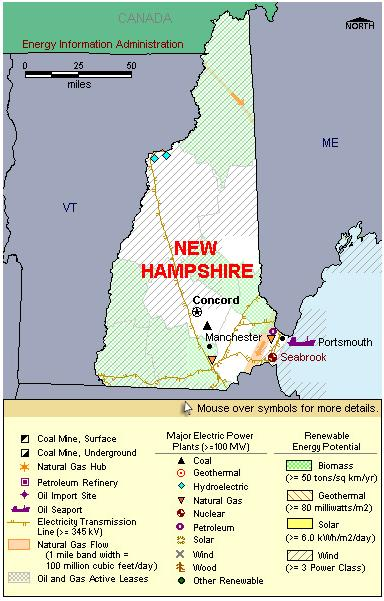

State Overview
There is one operating nuclear power plant in New Hampshire:
Seabrook in Rockingham County
- The plant was originally designed to include two reactors; however, Seabrook unit 2 was never completed.
- Seabrook has the largest reactor in New England and provides about 7 percent of the region's electric power generation.
- On November 1, 2002, the FPL Group (representing Florida Power & Light), announced acquisition of controlling interest in the Seabrook plant. FPL Group acquired 88.2 percent interest in the plant for a total of $837 million.
Contribution of Nuclear Power
New Hampshire has only one reactor; however, it is one of the largest reactors in the country, putting New Hampshire ahead of nearly all one-reactor states except Mississippi.
Until 2002, when it was surpassed by natural gas, nuclear power was the primary energy source in New Hampshire in terms of capacity. Nuclear power produces a little under half of the State’s electricity, the most of any energy source.
Built to service other parts of New England, Seabrook produces enough electricity to power nearly the entire State, allowing New Hampshire to export almost half of the State’s total generation.
Key Facts
Seabrook is the largest reactor in New England. The plant was originally designed to include two reactors; however, Seabrook unit 2 was never completed.
License Renewals
- Seabrook: On November 30, 2007, FPL Energy notified the NRC of its intent to prepare a license renewal application for Seabrook. The original license is valid until October 2026.

|
| New Hampshire Total Electric Power Industry, Summer Capacity and Net Generation, by Energy Source, 2008 |
| Primary Energy Source |
Summer Capacity
(MW) |
Share of State Total
(Percent) |
Net Generation
(Thousand MWh) |
Share of State Total
(Percent) |
| Nuclear |
1,245 |
29.8 |
9,350 |
40.9 |
| Coal |
528 |
12.6 |
3,451 |
15.1 |
| Hydro and Pumped Storage |
500 |
12.0 |
1,633 |
7.1 |
| Natural Gas |
1,205 |
28.9 |
7,073 |
30.9 |
| Other1 |
- |
- |
58 |
0.3 |
| Other Renewable1 |
193 |
4.6 |
1,175 |
5.1 |
| Petroleum |
503 |
12.0 |
136 |
0.6 |
| Total |
4,174 |
100.0 |
22,877 |
100.0 |
|
|
|
|
|
| New Hampshire Nuclear Power Plants, Summer Capacity and Net Generation, 2008 |
| Plant Name/Total Reactors |
Summer Capacity
(MW) |
Net Generation
(Thousand MWh) |
Share of State Nuclear
Net Generation
(Percent) |
Owner |
Seabrook
Unit 1 |
1,245 |
9,350 |
100.0 |
FPL Energy Seabrook LLC |
1 Plant
1 Reactor |
1,245 |
9,350 |
100.0 |
|
Plant Profiles
Seabrook Nuclear Generating Station
| Seabrook |
| Unit |
Summer Capacity
(MW) |
Net Generation
(Thousand MWh) |
Summer Capacity Factor
(Percent) |
Type |
Commercial Operation Date |
License Expiration Date |
| 1 |
1,245 |
9,350 |
85.7 |
PWR |
8/19/1990 |
3/15/2030 |
| |
1,245 |
9,350 |
85.7 |
|
|
|
Operator: FPL Energy Seabrook, Inc
Location and Service Territory: Seabrook Station is located on an 889-acre site that is 13 miles south of Portsmouth, New Hampshire.
Construction Cost: $12.9 billion (2007 USD)
Staffing: Employs more than 650 people.
Reactor Description: Seabrook is a Westinghouse four-loop pressurized water reactor. The core holds 193 fuel assemblies.
Cooling System: Seabrook is cooled with a once-through system with water that is drawn from the Atlantic Ocean.
see also:
more annual nuclear statistics
projected electricity capacity to 2035
international
electricity statistics |
|